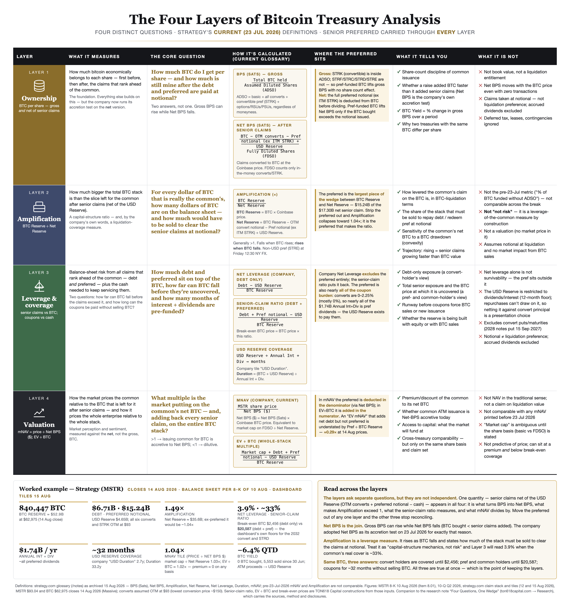

Four Questions, One Wedge
Bitcoin per share, amplification, leverage and mNAV are four different questions, and a treasury company can score well on three while failing the fourth. But every one of them is read off the same bar and the same cut — the wedge of claims that rank ahead of the common. Move the preferred out of any one layer and the other three stop reconciling.
{kind=link}
The frame, up front. Since 23 Jul 2026 Strategy has defined its own headline metrics against bitcoin net of senior claims: mNAV is now share price over Net BPS, Amplification is BTC Reserve over Net Reserve, and both are stated to be non-comparable with anything printed before that date. Read on those definitions, the four layers of treasury analysis are not four independent lenses. They are one balance sheet with one cut in it, read four ways — and the preferred stack, $15.2B of the $22.0B of gross claims, is what makes the cut. This note lays out each layer on the current glossary, shows where the preferred sits in it, and works the example on Strategy's own numbers.
One balance sheet, one cut
Every metric in this note starts from the same two quantities. The BTC Reserve is the coins times the price: 840,447 BTC at $62,975 is $52.9B. The Net Reserve is what remains after the claims that rank ahead of the common: subtract the notional of out-of-the-money convertible notes ($6.71B) and of the perpetual preferred ($15.24B across STRF, STRC, STRE, STRK and STRD), then add back the USD Reserve ($4.65B). At Friday's close every convert and STRK sits far out of the money — the lowest conversion price is near $150 against a $93.04 stock — so all of it is deducted, and the Net Reserve is $35.6B. The difference, $17.3B, is the wedge.
The exhibit is the whole note. Layer 1 divides the bar by shares, gross and net. Layer 2 divides the whole bar by the left piece. Layer 3 divides the wedge by the whole bar and asks how long the coupons on it can be paid. Layer 4 divides what the market pays by the left piece. Four questions; one cut. The rest of the note walks each layer on the company's current definitions and marks, in each, where the preferred sits and what the metric is not.
Layer 1 · OwnershipPer share, gross rises while net can fall
The question is how much bitcoin belongs to each share — and it has two answers. Bitcoin per share in the company's usage is gross bitcoin over Assumed Diluted Shares Outstanding, where ADSO adds every convertible note and every convertible preferred to the basic count regardless of whether conversion is in the money. It is a share-count discipline metric: it says whether common issuance bought more bitcoin than it added shares. Net BPS, adopted alongside the 23 Jul 2026 redefinitions, divides bitcoin net of the wedge by Fully Diluted Shares, which count only in-the-money instruments and deduct the notional of everything else. The company's own glossary states the reason: gross BPS "can increase as a result of transactions that also increase the Company's senior claims"; Net BPS rises "only to the extent a transaction increases the Company's bitcoin after accounting for such increase in senior claims."
Total BTC ÷ ADSO(BTC − OTM converts − pref notional ex ITM STRK + USD Reserve) ÷ FDSO% change in gross BPS over the periodNet: the entire preferred notional (ex any in-the-money STRK) comes off the bitcoin before it is divided. A preferred-funded purchase lifts Net BPS only if the bitcoin bought exceeds the notional issued.
- Not book value and not a liquidation entitlement; deferred tax, leases and contingencies are outside both metrics.
- Net BPS moves with the bitcoin price with no transaction at all: a lower price makes the same wedge a larger share of the coins.
- Claims are taken at notional, not liquidation preference; accrued and unpaid dividends are excluded.
Layer 2 · AmplificationA coverage ratio that rises when bitcoin falls
Amplification is the layer most often described as capital-structure mechanics rather than risk — the share of the bitcoin that was bought with securities that did not add to the share count. That was the pre-23 Jul 2026 metric. The current definition is the BTC Reserve divided by the Net Reserve: the whole bar over the left piece. The company's glossary describes what a higher reading means without euphemism — "more of the Company's BTC Reserve would need to be liquidated to support repayment of indebtedness or redemption or repurchase of preferred stock" — and notes that a fall in the bitcoin price raises it. That is a leverage ratio on the common's claim, and it should be read as one.
BTC Reserve ÷ Net Reserve$52.9B ÷ $35.6B = 1.49×$52.9B ÷ $50.9B = 1.04×- Not the pre-23 Jul 2026 "share of bitcoin funded without adding to ADSO," and not comparable with any Amplification printed before that date — the company says so.
- Not a valuation: there is no market price in it.
- Assumes claims are met at notional and that bitcoin sold to meet them has no market impact.
Layer 3 · LeverageTwo answers and a clock
The company's Net Leverage is debt less the USD Reserve, over the BTC Reserve — converts only. At Friday's close it is 3.9% (the tile printed 3.98%). It answers a convert holder's question, and answers it correctly: bitcoin would have to fall to about $2,456 before the notes were uncovered, which is the dashboard's own BTC Floor for the last-in-line 2032 convert. It does not answer the question a preferred holder, or a common holder, is asking. Put the $15.2B of preferred back into the numerator and the senior-claim ratio is 33% of the bitcoin, with the coverage point at $20,587 — again the dashboard's own number, its floor for STRD, the most junior series. The two figures are not in conflict. They are two different claims measured against the same bar.
The clock is the second half of the layer. Interest and dividends run at $1,736M a year, and the converts carry coupons of 0% to 2.25%, so nearly all of that is preferred dividends. The USD Reserve exists to pay them: $4.65B covers about 32 months (the company's "USD Duration" tile reads 2.7 years; its "Duration," which adds the bitcoin to the numerator, reads 33.2 years). The reserve was built with common issuance and, since June, with bitcoin sales — which is why the ownership layer and the leverage layer have to be read together.
(Debt − USD Reserve) ÷ BTC Reserve(Debt + Pref notional − USD Reserve) ÷ BTC ReserveUSD Reserve ÷ Annual Int + Div- Net Leverage alone is not survivability — the instrument that carries the cash cost sits outside it.
- The USD Reserve is, by board policy, restricted to dividends and interest with a twelve-month minimum; repurchases are not funded from it. Netting it against convert principal is a presentation choice, not a description of what the cash may be used for.
- Neither ratio sees the convert puts and maturities — the 2028 notes are puttable 15 September 2027 — and the company's USD Duration figure assumes the reserve is not used for them.
- Notional is not liquidation preference; accrued dividends are excluded.
Layer 4 · ValuationmNAV divides by what is left
The company's current mNAV is the share price divided by Net BPS in dollars — equivalently, market capitalization on the fully diluted count over the Net Reserve. The preferred is in the denominator by subtraction. On Friday's close and Massive's reference market capitalization of $36.6B, market cap over Net Reserve is 1.03×; the dashboard tile read 1.04× on 15 Aug 2026. Add every senior claim back to the numerator instead and the whole-stack multiple, enterprise value over BTC Reserve, is 1.02×. The premium is approximately zero on either basis — the flywheel condition our June valuation described has been absent for weeks, and the accretion test the company now applies (mNAV above one before common is issued for bitcoin) is being met only at the margin.
MSTR price ÷ Net BPS ($)(Market cap + Debt + Pref notional − USD Reserve) ÷ BTC Reserve- Not net asset value in the traditional sense, and the company says so; not a claim on what the common would receive in a liquidation.
- Not comparable with any mNAV printed before 23 Jul 2026.
- "Market cap" is ambiguous until the share basis is stated: basic, ADSO and FDSO give three different multiples.
- Not predictive of the share price. A treasury can trade at a premium and sit below its coverage point at the same time.
Read across: Net BPS is the join
The layers ask separate questions, but they are not independent, and the thing that connects them is the wedge. It is what turns BPS into Net BPS, what makes Amplification exceed one, what the senior-claim ratio measures, and what mNAV divides by. That is why the preferred cannot be assigned to one layer as "capital structure" and left out of the others: the arithmetic will not close. Amplification of 1.49× and Net Leverage of 3.9% describe the same balance sheet only if you know that 1.04× of the amplification is the converts and the rest is preferred — and that the preferred is what the coupons are on.
The practical join is Net BPS. Gross BPS can rise while Net BPS falls whenever a raise adds senior claims faster than it adds bitcoin, and since 23 Jul 2026 the company scores its own transactions on the net figure. For a reader, the test of any treasury's quarter is the same: did Net BPS rise, and if it did, was it the price of bitcoin or the capital allocation that moved it? For Strategy, quarter-to-date, gross BPS has fallen 6.4% and the change has been capital allocation — no bitcoin bought, 5,553 coins sold, and $4.65B of common issuance and coin sales directed to a reserve whose purpose is the preferred dividend.
What moves the wedge next
The Monday 8-K. Each week's Item 8.01 gives ATM sales, bitcoin bought or sold and the use of proceeds, STRC repurchases and the USD Reserve balance — every input to every layer here. Common issued into the reserve lowers gross BPS and the wedge at once; bitcoin sold to pay dividends lowers the bar and leaves the wedge alone.
STRC against $100. The $10.3B keystone of the preferred and its dividend engine. Where it trades is the market's price on the wedge.
The bitcoin price itself. Amplification, the senior-claim ratio and Net BPS all move with it and none of them needs a transaction to do so. The break-even prices do not move: $2,456 and $20,587 are claims divided by coins, and change only when the claims or the coins do.
The reference sheet
The four layers on one page, on the current glossary, with the preferred carried through each — what each measures, the core question, the calculation, where the preferred sits, what it tells you and what it is not, plus the worked example above. Open the image for the full-resolution version.

The one-page reference sheet accompanies this note online at ton618capital.com → Research → Four Questions, One Wedge (four-layers-reference-sheet.png).
Sources & Method
Definitions. All metric definitions — Bitcoin Per Share (in Sats), Assumed Diluted Shares Outstanding, Net BTC, Net Bitcoin Per Share (in Sats and in USD), Fully Diluted Shares Outstanding, BTC Reserve, USD Reserve, Net Reserve, Amplification, Net Leverage, Duration, Annual Int + Div, BTC Yield and mNAV, including the statement that mNAV and Amplification "referred to a different metric" before 23 Jul 2026 and are not comparable across that date — are quoted or paraphrased from the glossary published on the Strategy investor dashboard (strategy.com, "Notes" tab, 130 entries), read and archived in full on 15 Aug 2026. Quotations in the body are verbatim from that glossary. The USD Reserve's restriction to dividends and interest, its twelve-month minimum and the statement that repurchases will not be funded from it are per the Digital Credit Capital Framework disclosed in the Form 8-K of 29 Jun 2026; that the reserve is assumed not to fund convertible puts and maturities is per the glossary's USD Duration definition.
Balance-sheet inputs. Bitcoin held 840,447 and USD Reserve $4,650M: Form 8-K filed 10 Aug 2026 (Item 8.01), as of 9 Aug 2026. Convertible notional $6,714M (2028 $1,010M; 2029 $1,500M; 2030 A $800M; 2030 B $2,000M; 2031 $604M; 2032 $800M) and preferred notional $15,238M (STRF $1,284M; STRC $10,254M; STRE $896M; STRK $1,402M; STRD $1,402M): the per-instrument claim stack published on the strategy.com credit dashboard as read 12 Aug 2026 (archived with The Solvency Map Is Not the Credit), consistent with the aggregate principal in the Form 10-Q for the quarter ended 30 Jun 2026 (filed 3 Aug 2026), less STRC repurchases since. STRE is euro-denominated and is carried at the dashboard's dollar figure. Annual Int + Div $1,736M, Amplification 1.49×, Net Leverage 3.98%, mNAV 1.04×, Duration 33.2 years, USD Duration 2.7 years and BTC Yield −6.4% quarter-to-date: header tiles on strategy.com read 15 Aug 2026, computed by the company at its own bitcoin price at that time (about $63,400). Bitcoin sold since 30 Jun (5,553; no purchases): strategy.com Ledger tab and the weekly Forms 8-K of 6, 13, 20, 27 Jul and 3, 10 Aug 2026, read 15 Aug 2026. Convert coupon range 0%–2.25% and the lowest conversion price (~$150, 2030 A notes) and the 15 Sep 2027 put on the 2028 notes: indenture terms as summarized in the 10-Q. STRK converts at ten shares of STRK per share of class A common (offering documents).
Market prices. MSTR $93.04 and X:BTCUSD $62,975.19: daily closes for 14 Aug 2026 (Massive.com, US equities and crypto daily aggregates; pulled 15 Aug 2026). MSTR market capitalization $36.6B: Massive.com reference data, pulled 15 Aug 2026 (weighted shares outstanding 393.8M at the 14 Aug 2026 close). Because that share basis differs from the company's FDSO (and from the 384.2M basic shares on the 10-Q cover as of 24 Jul 2026), market cap over Net Reserve (1.03×) and EV ÷ BTC (1.02×) are our constructions on Massive's share basis and are quoted beside, not in place of, the company's mNAV tile.
Formulas and constructions (ours, labeled). BTC Reserve = coins × the 14 Aug 2026 close = $52.93B. Net senior claims = converts + preferred notional − USD Reserve = $17.30B, treating every convert and STRK as out of the money at $93.04. Net Reserve = $35.63B. Amplification = $52.93B ÷ $35.63B = 1.486×; ex-preferred = $52.93B ÷ $50.86B = 1.041×. Net Leverage = ($6.71B − $4.65B) ÷ $52.93B = 3.90%. Senior-claim ratio = $17.30B ÷ $52.93B = 32.7%. Break-even bitcoin prices = claims net of reserve ÷ coins: $2,456 (converts) and $20,587 (converts + preferred); these equal, by construction, the dashboard's published BTC Floor for the 2032 convert ($2,456) and for STRD ($20,587) as read 12 Aug. USD Reserve coverage = $4,650M ÷ $1,736M = 2.68 years. Duration check = ($52.93B + $4.65B) ÷ $1.74B = 33.2 years against the tile's 33.2. EV ÷ BTC = ($36.64B + $17.30B) ÷ $52.93B = 1.019×. Preferred over BTC Reserve = 0.288×. The senior-claim ratio, EV ÷ BTC, the ex-preferred Amplification and the break-even prices are TON618 constructions from company inputs, not company metrics. The reference sheet uses the same inputs and constructions.
Assumptions, labeled. Every convertible note and STRK is treated as out of the money and deducted at notional; the "coupons are almost all preferred dividends" statement follows from the 0%–2.25% coupon range on $6,714M of notes against $1,736M of Annual Int + Div and is an inference, not a company disclosure of the split. Notional is used for every claim, per the company's own definitions; liquidation preferences and accrued dividends may differ.
Prior TON618 notes relied upon. The Solvency Map Is Not the Credit — Strategy's BTC Credit model, evaluated, 12 Aug 2026; MSTR Q2 2026: The Drain, Made Visible — addendum, 31 Jul 2026; Strategy (MSTR): What Are You Really Buying? — full valuation, 28 Jun 2026.
Disclosures
Methodology & data. This note is an analytical framework applied to Strategy Inc.'s published metrics and filings as dated. Company-defined metrics are reproduced on the company's stated definitions; the senior-claim ratio, EV ÷ BTC, ex-preferred Amplification and break-even prices are TON618 constructions from those inputs and are labeled as such. Figures are point-in-time and will change with the bitcoin price and with each weekly filing. Read with our 12 Aug 2026 credit-model evaluation, Q2 2026 addendum and 28 Jun 2026 valuation.
1 · Information only. TON618 Capital. This report is for information purposes only. Nothing here is an offer to sell or a solicitation of an offer to buy any security, fund interest, or digital asset, and nothing here is personalized investment advice or a recommendation regarding any instrument.
2 · Publisher’s exclusion. All research is published solely as general, impersonal information of regular circulation. It is not tailored to the objectives or circumstances of any individual and is not issued in connection with compensation from any client. The Fund has no clients and distributes all research free of charge. On that basis it publishes in reliance on the publisher’s exclusion from the definition of “investment adviser” under the Investment Advisers Act of 1940 (§202(a)(11)(D); cf. Lowe v. SEC, 472 U.S. 181 (1985)).
3 · Registration & conflicts. TON618 Capital is not registered as an investment adviser or broker-dealer in any capacity. The Fund is a Bitcoin fund and may hold or transact in the securities or digital assets it discusses; material conflicts are disclosed where they exist. The Fund receives no compensation from any party in connection with its research. As of this report, the Fund is long bitcoin and holds no position in MSTR common stock, MSTR derivatives, or MSTR preferred or convertible securities, long or short.
4 · Use of AI. Artificial intelligence is used in the creation of this research. All methodology and data integrity are reviewed and approved before publication by TON618 Capital’s Chief Investment Officer, Keyth Beck; errors may nonetheless occur, and readers should verify independently.
5 · CFA. This report was prepared to align with CFA Institute analytical standards (methodology only). CFA® and Chartered Financial Analyst® are registered trademarks owned by CFA Institute. That reference describes the analytical framework applied; it does not imply the report was prepared, reviewed, or authored by a CFA charterholder, and the report is not issued, reviewed, endorsed, certified, or approved by — nor affiliated with — CFA Institute.
6 · Risk & feedback. Past performance is not indicative of future results. Digital assets and equities are volatile and may result in total loss of capital. Corrections and feedback are welcome — please direct them to CIO Keyth Beck at keyth@ton618capital.com.
© 2026 TON618 Capital. Strategy™, MicroStrategy®, and tickers MSTR, STRF, STRC, STRE, STRK, STRD are marks of Strategy Inc., used for identification only. “BTC Reserve,” “Net Reserve,” “Amplification,” “Net Leverage,” “Duration,” “BPS,” “Net BPS,” “BTC Yield” and “mNAV” are Strategy’s labels for its own illustrative metrics.